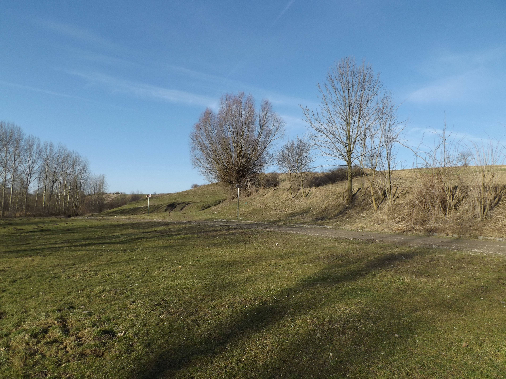

Grodzisko w Stradowie
Wczesnośredniowieczne grodzisko w Stradowie w województwie świętokrzyskim, położone w połowie drogi między Chrobrzem a Skalbmierzem. Największe grodzisko w Polsce. Powstanie grodu istniejącego od VIII – X wieku należy wiązać z państwem Wiślan.